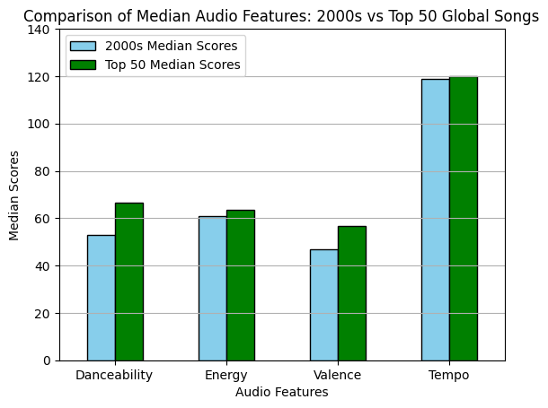
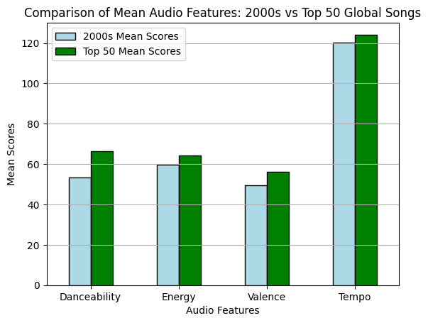
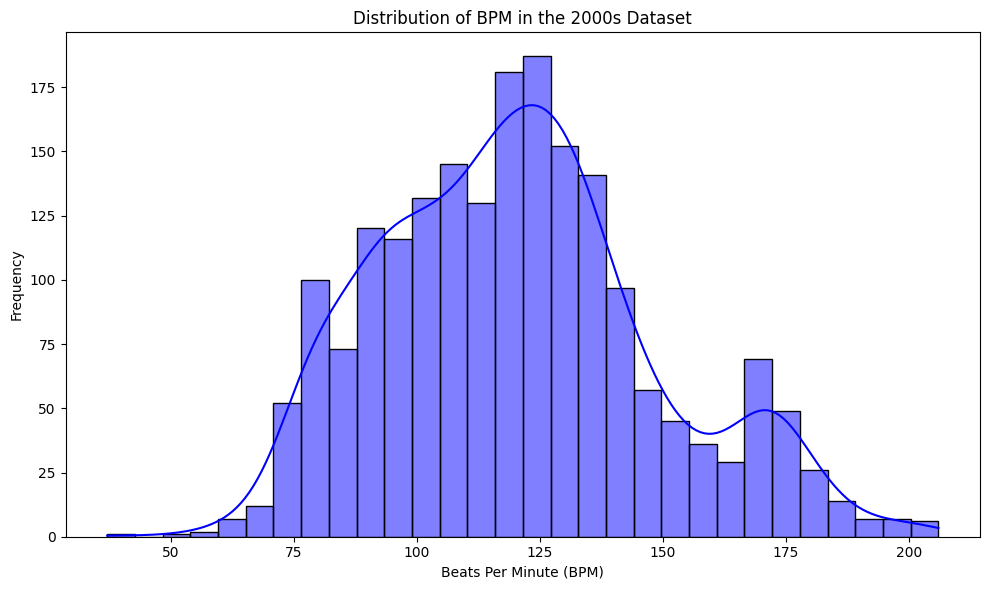
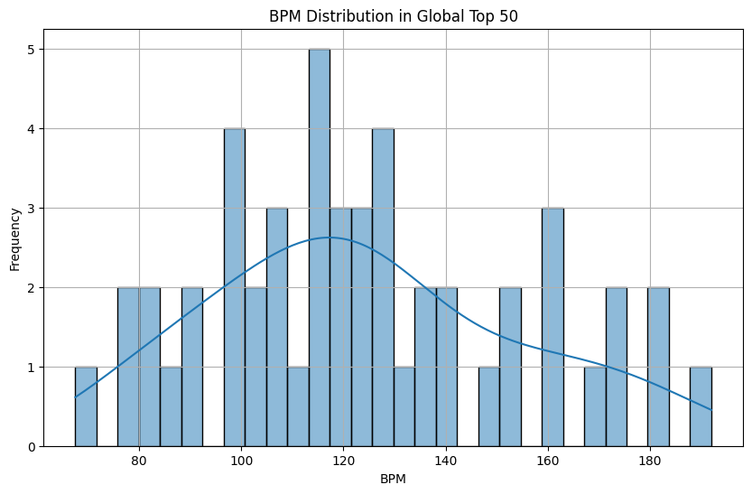

import spotipy
from spotipy.oauth2 import SpotifyClientCredentials
import pandas as pd
# Set up your credentials
client_id = '65da108bf5264338923828f386e46acd'
client_secret = '12fa81f51ba54420b18eedd354575dc4'
# Authenticate with Spotify
client_credentials_manager = SpotifyClientCredentials(client_id=client_id, client_secret=client_secret)
sp = spotipy.Spotify(client_credentials_manager=client_credentials_manager)import spotipy
from spotipy.oauth2 import SpotifyClientCredentials
import pandas as pd
# Get the global top 50 playlist
playlist_id = "37i9dQZEVXbMDoHDwVN2tF" # Spotify Global Top 50 playlist ID
playlist_tracks = sp.playlist_tracks(playlist_id)
# Extract track details and audio features
track_data = []
for item in playlist_tracks['items']:
track = item['track']
track_id = track['id']
track_name = track['name']
artist_name = track['artists'][0]['name']
album_name = track['album']['name']
release_date = track['album']['release_date']
popularity = track['popularity']
# Fetch audio features for the track
audio_features = sp.audio_features(track_id)[0]
# Combine track details with audio features
track_data.append({
'Track Name': track_name,
'Artist': artist_name,
'Album': album_name,
'Release Date': release_date,
'Popularity': popularity,
**audio_features
})
# Convert to DataFrame for analysis
top50_df = pd.DataFrame(track_data)
# Drop unwanted columns
columns_to_drop = ['id', 'uri', 'track_href', 'analysis_url', 'type']
top50_df.drop(columns=columns_to_drop, inplace=True)
# Save the DataFrame to a CSV file
csv_file_path = 'Spotify_Global_Top50_Audio_Features.csv'
top50_df.to_csv(csv_file_path, index=False)
# Display the first few rows of the DataFrame to confirm
top50_df.head()| Track Name | Artist | Album | Release Date | Popularity | danceability | energy | key | loudness | mode | speechiness | acousticness | instrumentalness | liveness | valence | tempo | duration_ms | time_signature | |
|---|---|---|---|---|---|---|---|---|---|---|---|---|---|---|---|---|---|---|
| 0 | Who | Jimin | MUSE | 2024-07-19 | 93 | 0.660 | 0.756 | 0 | -3.743 | 0 | 0.0320 | 0.00289 | 0.000000 | 0.1930 | 0.838 | 116.034 | 170888 | 4 |
| 1 | BIRDS OF A FEATHER | Billie Eilish | HIT ME HARD AND SOFT | 2024-05-17 | 99 | 0.747 | 0.507 | 2 | -10.171 | 1 | 0.0358 | 0.20000 | 0.060800 | 0.1170 | 0.438 | 104.978 | 210373 | 4 |
| 2 | Espresso | Sabrina Carpenter | Espresso | 2024-04-12 | 99 | 0.701 | 0.760 | 0 | -5.478 | 1 | 0.0285 | 0.10700 | 0.000065 | 0.1850 | 0.690 | 103.969 | 175459 | 4 |
| 3 | Please Please Please | Sabrina Carpenter | Please Please Please | 2024-06-06 | 98 | 0.669 | 0.586 | 9 | -6.073 | 1 | 0.0540 | 0.27400 | 0.000000 | 0.1040 | 0.579 | 107.071 | 186365 | 4 |
| 4 | Good Luck, Babe! | Chappell Roan | Good Luck, Babe! | 2024-04-05 | 96 | 0.700 | 0.582 | 11 | -5.960 | 0 | 0.0356 | 0.05020 | 0.000000 | 0.0881 | 0.785 | 116.712 | 218424 | 4 |
import pandas as pd
# Load the dataset
spotify_df_global = pd.read_csv('Spotify_Global_Top50_Audio_Features.csv')
# Calculate the 95th and 99th percentile values for Popularity
percentile_95 = spotify_df_global['Popularity'].quantile(0.95)
percentile_99 = spotify_df_global['Popularity'].quantile(0.99)
# Filter the dataset to include only the rows within the 95th to 99th percentile
filtered_data = spotify_df_global[(spotify_df_global['Popularity'] >= percentile_95) & (spotify_df_global['Popularity'] <= percentile_99)]
# Define the feature columns for which to calculate the mean
feature_columns = ['danceability', 'energy', 'valence', 'tempo']
# Calculate the mean of each feature within the filtered data
mean_scores = filtered_data[feature_columns].mean()
print("Mean Scores of Features in the 95th to 99th Percentile of Popularity:")
print(mean_scores)Mean Scores of Features in the 95th to 99th Percentile of Popularity:
danceability 0.705667
energy 0.617667
valence 0.569000
tempo 105.339333
dtype: float64import pandas as pd
spotify_df_global = pd.read_csv('Spotify_Global_Top50_Audio_Features.csv')
bottom_scores_global = spotify_df_global[spotify_df_global['Popularity'].between(70,80)]
feature_columns = ['danceability', 'energy', 'valence', 'tempo'] # Adjust if needed
print(bottom_scores_global[[ 'Popularity'] + feature_columns]) Popularity danceability energy valence tempo
26 77 0.599 0.946 0.747 151.647
31 78 0.464 0.745 0.262 180.098spotify_df_2000 = pd.read_csv('Spotify-2000.csv')
spotify_df_median = spotify_df_2000[['Danceability', 'Energy', 'Valence', 'Beats Per Minute (BPM)']].median()
print(spotify_df_median)
spotify_df_global_median = spotify_df_global[['danceability', 'energy', 'valence', 'tempo']].median()
print(spotify_df_global_median)Danceability 53.0
Energy 61.0
Valence 47.0
Beats Per Minute (BPM) 119.0
dtype: float64
danceability 0.664
energy 0.637
valence 0.569
tempo 120.026
dtype: float64import pandas as pd
# Load the datasets
spotify_df_2000 = pd.read_csv('Spotify-2000.csv')
spotify_df_global = pd.read_csv('Spotify_Global_Top50_Audio_Features.csv')
# Scale up the normalized median values for Danceability, Energy, and Valence
scaled_median_2000s = spotify_df_median[['Danceability', 'Energy', 'Valence']] * 1 # Multiply by 100 to match the original scale
# Ensure that the Top 50 Median Scores are correctly scaled for consistency (excluding Tempo)
scaled_median_top50 = spotify_df_global_median[['danceability', 'energy', 'valence']] * 100
# Add Tempo back to the DataFrame without scaling
scaled_median_2000s['Tempo'] = spotify_df_median['Beats Per Minute (BPM)']
scaled_median_top50['Tempo'] = spotify_df_global_median['tempo']
# Create a DataFrame to compare the scaled medians
comparison_df = pd.DataFrame({
'2000s Median Scores': scaled_median_2000s.values,
'Top 50 Median Scores': scaled_median_top50.values
})
# Adjust index to match the features' names
comparison_df.index = ['Danceability', 'Energy', 'Valence', 'Tempo']
# Display the comparison
print(comparison_df) 2000s Median Scores Top 50 Median Scores
Danceability 53.0 66.400
Energy 61.0 63.700
Valence 47.0 56.900
Tempo 119.0 120.026import matplotlib.pyplot as plt
import seaborn as sns
comparison_df = pd.DataFrame({
'2000s Median Scores': scaled_median_2000s.values,
'Top 50 Median Scores': scaled_median_top50.values
})
comparison_df.index = ['Danceability', 'Energy', 'Valence', 'Tempo']
# Plotting the comparison
plt.figure(figsize=(10, 6))
comparison_df.plot(kind='bar', color=['skyblue', 'green'], edgecolor='black')
plt.title('Comparison of Median Audio Features: 2000s vs Top 50 Global Songs')
plt.xlabel('Audio Features')
plt.ylabel('Median Scores')
plt.xticks(rotation=0)
plt.ylim(0, max(comparison_df.max()) + 20) # Set y-axis limit slightly above the maximum value
plt.grid(axis='y')
plt.show()<Figure size 1000x600 with 0 Axes>
spotify_df_2000 = pd.read_csv('Spotify-2000.csv')
spotify_df_global = pd.read_csv('Spotify_Global_Top50_Audio_Features.csv')
# Calculate the mean for each feature in the Spotify 2000 dataset
mean_2000s = spotify_df_2000[['Danceability', 'Energy', 'Valence', 'Beats Per Minute (BPM)']].mean()
# Calculate the mean for each feature in the Top 50 Global dataset
mean_top50 = spotify_df_global[['danceability', 'energy', 'valence', 'tempo']].mean()
# Scale only 'danceability', 'energy', and 'valence' but not 'tempo'
scaled_mean_top50 = mean_top50.copy()
scaled_mean_top50[['danceability', 'energy', 'valence']] *= 100
# Create a DataFrame to compare the means
mean_comparison_df = pd.DataFrame({
'2000s Mean Scores': mean_2000s.values,
'Top 50 Mean Scores': scaled_mean_top50.values
})
# Adjust index to match the features' names
mean_comparison_df.index = ['Danceability', 'Energy', 'Valence', 'Tempo']
# Display the comparison DataFrame
print(mean_comparison_df)
# Adjust index to match the features' names
mean_comparison_df.index = ['Danceability', 'Energy', 'Valence', 'Tempo']
# Plotting the comparison
plt.figure(figsize=(10, 6))
mean_comparison_df.plot(kind='bar', color=['lightblue', 'green'], edgecolor='black')
plt.title('Comparison of Mean Audio Features: 2000s vs Top 50 Global Songs')
plt.xlabel('Audio Features')
plt.ylabel('Mean Scores')
plt.xticks(rotation=0)
plt.ylim(0, 130) # Set y-axis limit to 120
plt.grid(axis='y')
plt.show() 2000s Mean Scores Top 50 Mean Scores
Danceability 53.238215 66.30200
Energy 59.679539 64.13000
Valence 49.408726 56.15160
Tempo 120.215647 123.91218<Figure size 1000x600 with 0 Axes>
The analysis then transitions to comparing the median and mean audio features between the two datasets. The bar charts visually summarize these comparisons, highlighting differences in median and mean scores for Danceability, Energy, Valence, and Tempo.
This bar chart vividly illustrates the tempo variations among these top tracks, which do not vary widely, suggesting a consistency in tempo among the most popular songs globally.
top50_df = pd.read_csv('Spotify_Global_Top50_Audio_Features.csv')
# Extract the top 10 songs based on popularity
top_10_songs = top50_df.nlargest(5, 'Popularity')
plt.figure(figsize=(12, 6))
# Bar plot for BPM
sns.barplot(x=top_10_songs['Track Name'], y=top_10_songs['tempo'])
plt.title('BPM of Top 10 Songs in Global Top 50')
plt.xlabel('Track Name')
plt.ylabel('Beats Per Minute (BPM)')
plt.xticks(rotation=45, ha='right')
plt.show()
import pandas as pd
import matplotlib.pyplot as plt
import seaborn as sns
spotify_df = pd.read_csv('Spotify-2000.csv')
# Extract the top 10 songs based on popularity
top_10_songs =spotify_df.nlargest(5, 'Popularity')
# Create a plot
plt.figure(figsize=(12, 6))
# Bar plot for BPM
sns.barplot(x=top_10_songs['Title'], y=top_10_songs['Beats Per Minute (BPM)'])
# Adding titles and labels
plt.xlabel('Track Name')
plt.ylabel('Beats Per Minute (BPM)')
plt.xticks(rotation=50, ha='right')
plt.show()
import pandas as pd
import matplotlib.pyplot as plt
import seaborn as sns
spotify_df_2000 = pd.read_csv('Spotify-2000.csv')
# Plot the distribution of BPM in the 2000s dataset
plt.figure(figsize=(10, 6))
sns.histplot(spotify_df_2000['Beats Per Minute (BPM)'], bins=30, kde=True, color='blue')
# Adding titles and labels
plt.title('Distribution of BPM in the 2000s Dataset')
plt.xlabel('Beats Per Minute (BPM)')
plt.ylabel('Frequency')
# Display the plot
plt.tight_layout()
plt.show()# Histogram to visualize the distribution of BPM
plt.figure(figsize=(10, 6))
sns.histplot(top50_df['tempo'], bins=30, kde=True)
plt.title('BPM Distribution in Global Top 50')
plt.xlabel('BPM')
plt.ylabel('Frequency')
plt.grid(True)
plt.show()
# Analyzing common BPM peaks
bpm_peaks = top50_df['tempo'].value_counts().sort_values(ascending=False)
print(bpm_peaks.head(10))tempo
116.034 1
104.978 1
103.969 1
107.071 1
116.712 1
128.027 1
101.061 1
99.986 1
105.029 1
80.969 1
Name: count, dtype: int64